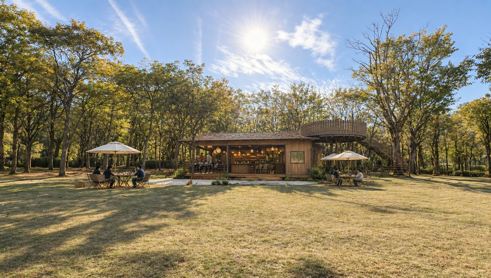
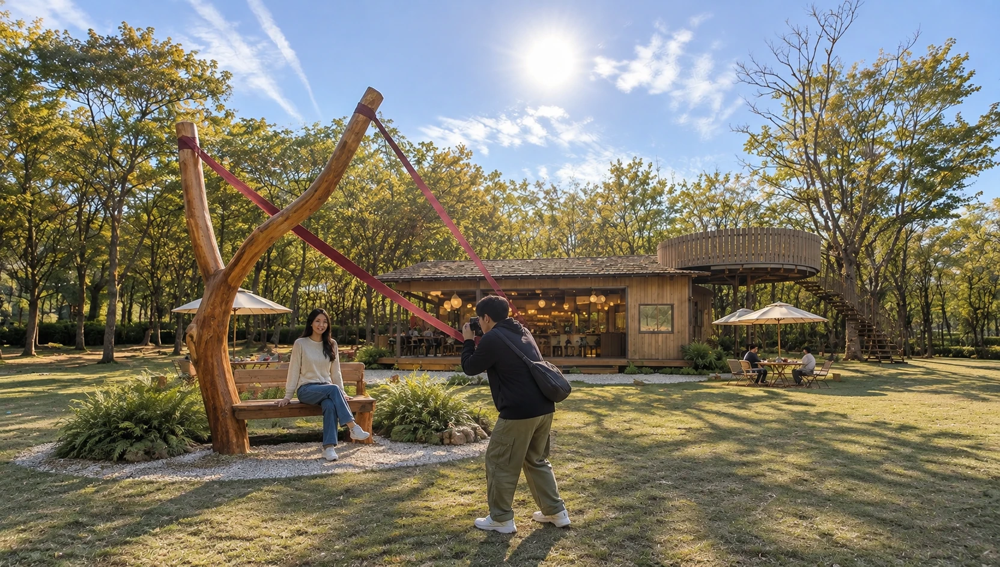
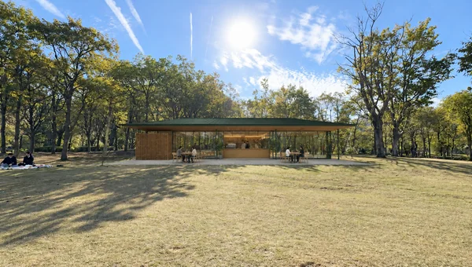
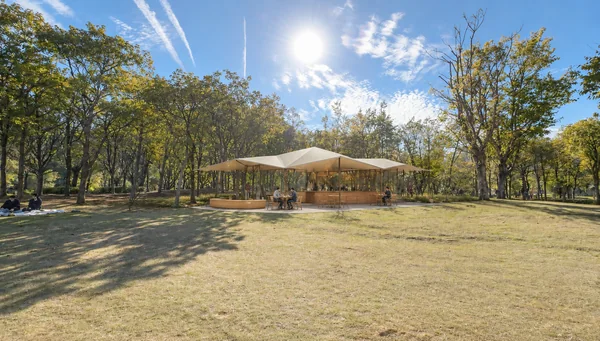
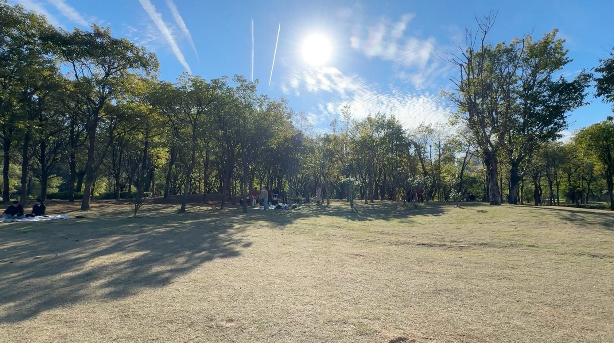
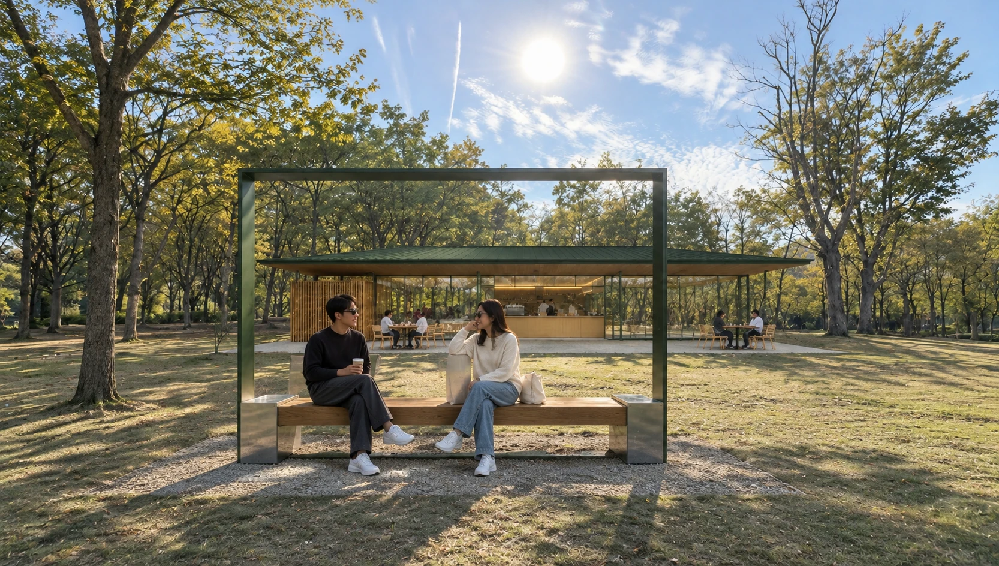
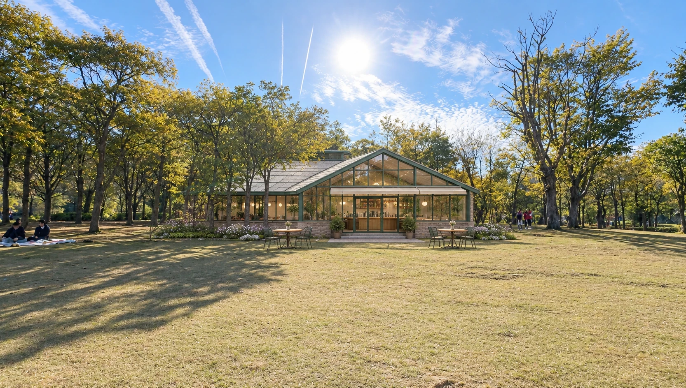
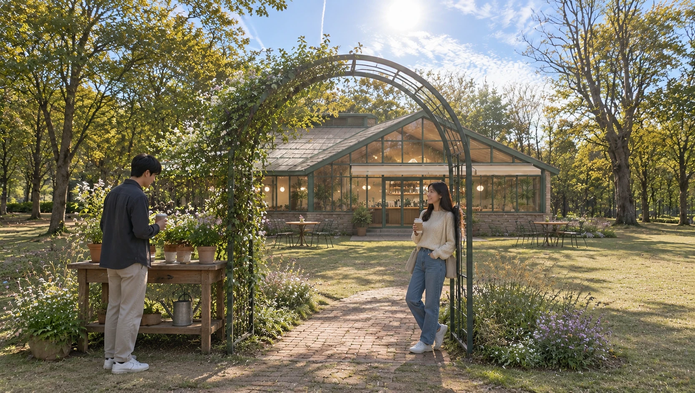
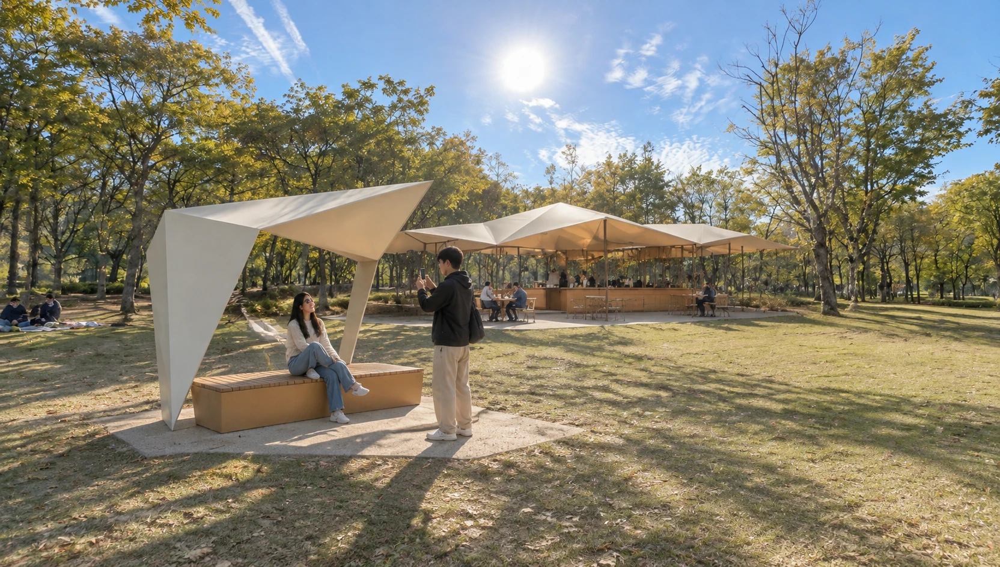

A树冠木屋
指定参考风格 · 木屋、林下座席与高位观景
把“树上看风景”变成核心记忆
低矮木屋承担出品与室内停留，右侧独立圆形平台形成高位体验；地面座席分散到林缘。木板、深色屋面、帆布椅与米白伞保持参考里的自然营地感。
耐候木深色屋面独立木平台透水碎石
打卡点 / 原木取景座
借用弹弓造型参考中“Y形木叉 + 红线条”的记忆点，转译为可坐、可取景的静态木雕座椅，让游客与木屋同框。
深化重点：树木保护范围、高位平台结构、楼梯与疏散条件。


以公园正面实拍图为场地基础，保留树林与草坪的现场特征，比较四种主建筑方向。A 提炼指定参考视频的木屋与树冠平台，其余三案分别探索轻盈现代、植物花房与当代亭阁。

B 森林薄檐轻盈现代 / 开敞日常C 林间温室植物花房 / 四季花园
D 折纸亭当代亭阁 / 艺术地标

低矮木屋承担出品与室内停留，右侧独立圆形平台形成高位体验；地面座席分散到林缘。木板、深色屋面、帆布椅与米白伞保持参考里的自然营地感。
借用弹弓造型参考中“Y形木叉 + 红线条”的记忆点，转译为可坐、可取景的静态木雕座椅，让游客与木屋同框。
深化重点：树木保护范围、高位平台结构、楼梯与疏散条件。

深绿色薄檐压低视觉体量，玻璃界面使室内外互相可见。木格栅收纳后勤，出品窗口面向草坪，外摆控制在檐下和小范围透水地坪。
纤细深绿取景框搭配木面坐凳，小块半镜面侧板映入树影。装置延续主建筑水平、轻巧、干净的细节语言。
深化重点：大檐抗风与排水、玻璃遮阳、开放界面的季节使用。


双坡花房提供明确的外观识别，绿色细框、矮砖基座与淡色屋面形成轻柔质感。门前花境替代硬质装饰，可延伸花艺与植物活动。
疏朗藤蔓与小花攀附在细钢构拱门一侧，配一张小型植物工作台。通过种植更替更新内容，保留日常花园的松弛感。
深化重点：夏季热负荷、外遮阳与通风、花境维护责任。

几块明确折面构成轻盈亭阁，开敞立面与暖色低基座保持亲近人的尺度。它适合希望咖啡屋同时承担公园活动集合点的定位。
小尺度折面构架与低坐台呼应主建筑，日照在地面留下几何影子，游客可坐、可停留，也可与主建筑同框。
深化重点：异形屋面节点、排水可维护性与造价控制。

A 最贴近指定的参考，记忆点强；B 的日常运营、空间通透性与长期维护更容易取得平衡。C 适合植物主题经营，D 更适合希望形成公园地标的定位。
以上为基于实拍的 AI 概念渲染。生成过程会对局部树枝与人物作重构；真实树位、根区、建筑面积、标高及结构需要测绘后校准。